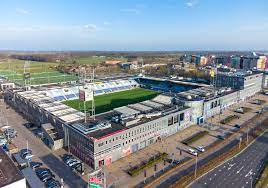

Het Stadion

Het stadion van PEC Zwolle is het MAC³PARK stadion, gelegen in Zwolle, Nederland. Het stadion is de thuisbasis van de voetbalclub PEC Zwolle en biedt plaats aan ruim 14.000 toeschouwers. Het werd officieel geopend in 2009 en heeft sindsdien een belangrijke rol gespeeld in de rijke voetbalgeschiedenis van de club.
Het MAC³PARK stadion heeft moderne faciliteiten en biedt een geweldige voetbalervaring voor zowel spelers als fans. Het stadion beschikt over vier overdekte tribunes die een uitstekend zicht bieden op het veld, waardoor elke plek in het stadion een goede plek is om van de wedstrijd te genieten. Bovendien zorgt de sfeervolle inrichting ervoor dat supporters een intense en meeslepende voetbalbeleving ervaren.
Naast de wedstrijden van PEC Zwolle worden in het stadion ook regelmatig andere evenementen georganiseerd, zoals concerten en bedrijfsevenementen. Het stadion is goed bereikbaar met het openbaar vervoer en er zijn voldoende parkeermogelijkheden in de buurt.
Het stadion van PEC Zwolle heeft een speciale plek in het hart van de club en haar fans. Het vertegenwoordigt de trots en passie van de club en biedt een plek waar supporters samenkomen om hun team aan te moedigen. Het is een plek waar herinneringen worden gemaakt en gedeeld, en waar voetballiefhebbers de opwinding en emotie van de sport kunnen ervaren.
Kortom, het MAC³PARK stadion is een modern en sfeervol voetbalstadion dat een belangrijk onderdeel vormt van de identiteit van PEC Zwolle en een geweldige plek is voor voetbalfans om van wedstrijden en andere evenementen te genieten.